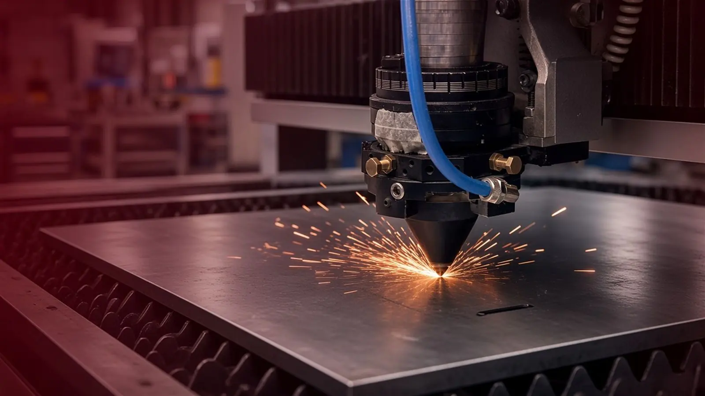
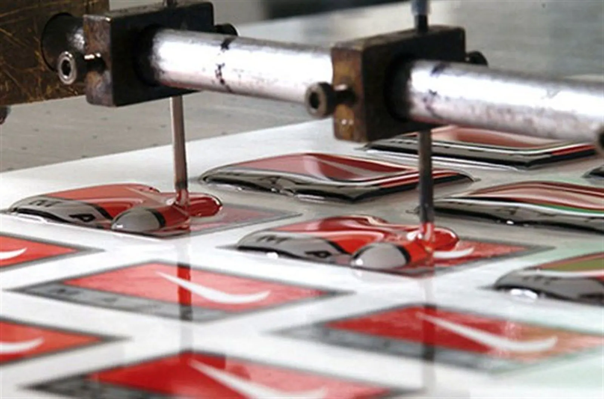

Création de Plaquettes Industrielles à Marckolsheim : découpe et formage du métal.
Accueil/À propos
À propos
65 ans de savoir-faire, et toujours l’envie d’aller plus loin.
Depuis 1961, PIM Industrie imprime, découpe et assemble à Marckolsheim des pièces pour l’industrie et pour le luxe. Derrière chaque pièce, il y a une équipe qui transmet son savoir-faire et prépare la suite.

65 ansde présence à Marckolsheim, depuis 1961
543 000pièces produites chaque année
4 500 m²d’atelier, de la teinte à l’expédition
ISO 9001qualité certifiée, et EcoVadis Silver depuis 2018
Notre histoire
65 ans de présence, et la suite s’écrit maintenant.
Née sous le nom de Plaquettes Industrielles de Marckolsheim, PIM a toujours suivi ses clients : du métal à la sérigraphie, des claviers à l’électronique imprimée, de l’industrie au luxe.
Premières sérigraphies sur polyester.
Premiers claviers à membrane plats.
Plaquettes Industrielles devient PIM Industrie. Arrivée des claviers à coupelles.
Automatisation de la pose des coupelles.
Première certification ISO 9001.
Arrivée de l’encre miroir, pour le luxe.
Premier clavier capacitif.
Électronique imprimée sur support souple.
Découpe laser du métal.
Point Carré 67, imprimeur à Eckbolsheim, rejoint le groupe.
Rachat des machines de la société IHM. PIM fête ses 65 ans.
Faites défiler la frise vers la droite.

Le mot du dirigeant
« Nous croyons à une industrie française qui investit, innove et produit localement. Et nous croyons avant tout que les femmes et les hommes de nos équipes sont notre première richesse. »
Jean-Marc Sayer
Président de PIM Industrie
Ce qui nous guide
Quatre idées simples, tenues chaque jour.
01
L’exigence
Chaque écran de sérigraphie passe sous la table lumineuse avant d’imprimer. La qualité se construit à chaque étape, pas seulement à la fin.
02
L’écoute
On commence par comprendre le besoin, même quand le procédé n’est pas encore choisi. Puis on dit franchement ce qui est faisable.
03
La transmission
Les gestes se passent d’un collègue à l’autre. Les plus expérimentés forment les apprentis, et les jeunes apportent leurs idées.
04
La créativité
Un procédé adapté, une finition imaginée avec le client, le détail qui fait qu’une pièce PIM se reconnaît. De l’encre miroir à l’électronique imprimée, l’idée est toujours d’aller un cran plus loin.
L’équipe
Des savoir-faire sous le même toit.
Sérigraphes, opérateurs, techniciens, contrôleurs, commerciaux, ingénieurs : à Marckolsheim, toute la chaîne se tient dans le même bâtiment. On se parle d’un poste à l’autre, on règle les problèmes ensemble, et la pièce ne change jamais de mains. C’est ce qui nous permet d’être exigeants sans être lents.


Jeunes talents
Ici, on fait confiance aux jeunes.
Apprentis et alternants ne restent pas sur le côté : dès leurs premières semaines, ils travaillent sur de vraies pièces, aux côtés de collègues qui ont des dizaines d’années de métier. On leur transmet un savoir-faire rare, et ils nous apportent un regard neuf, des questions et des idées. C’est cet échange qui fait avancer l’atelier, et ici, une bonne idée n’attend pas l’ancienneté pour être essayée.
- Un tuteur dès le premier jour
- De vraies responsabilités, sur de vraies séries
- Des métiers rares, qui s’apprennent en atelier
Nos engagements
Fabriquer bien, c’est aussi fabriquer juste.
Nous sommes une PME : nos engagements sont à notre taille, concrets et suivis. Voici ce que nous faisons déjà, et ce que nous voulons améliorer.
Trier et valoriser
Chutes de matière, emballages, consommables : à l’atelier, les déchets sont triés à la source, puis orientés vers la filière de recyclage ou de valorisation qui convient à chaque matière. Moins de matière perdue, c’est aussi une pièce mieux pensée dès le départ.
Consommer moins
Nous suivons nos consommations d’eau, d’électricité et de gaz, et nous adaptons le conditionnement à chaque pièce (vrac, plateau thermoformé, chargeur pour chaîne de montage) pour éviter la casse et le sur-emballage.
Fabriquer pour durer
L’éco-conception commence à l’étude : bon matériau, bonne épaisseur, pas de surqualité. Chaque pièce est contrôlée avant de partir, et tout est produit à Marckolsheim, au plus près de nos clients.
Une démarche reconnue
ISO 9001
Système qualité certifié depuis 2000 : traçabilité et contrôle de chaque pièce.
EcoVadis Silver
EcoVadis Silver depuis 2018 pour notre démarche RSE.
AC:Tions
Membre fondateur de l’association AC:Tions en Centre Alsace.
Et parce que la responsabilité commence par les gens : formation, apprentissage et sécurité au poste font partie de notre quotidien.
L’atelier
De la teinte au contrôle, tout reste à Marckolsheim.
Préparation des teintes, sérigraphie, découpe, pose des composants, contrôle et expédition : 4 500 m² où chaque étape se fait sous le même toit. Le détail des machines est présenté avec nos prestations.
Nous rejoindre
Envie d’apprendre un métier qui ne se délocalise pas ?
Production, sérigraphie, découpe, contrôle : nos métiers sont variés et nous recrutons régulièrement, sur des profils très différents. Nous accueillons aussi apprentis et alternants. Pas besoin de tout savoir : la curiosité et le soin du travail bien fait comptent autant que le diplôme.
Nous trouver
Impasse Kohlgaerten, 67390 Marckolsheim
Entre Strasbourg, Colmar et Bâle, à proximité de l’A35.